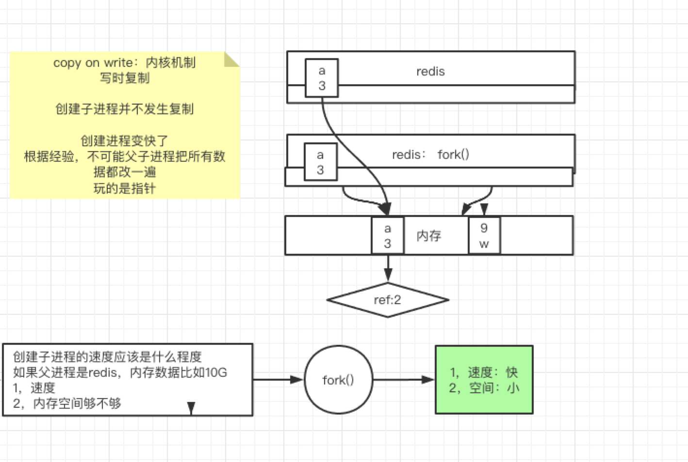
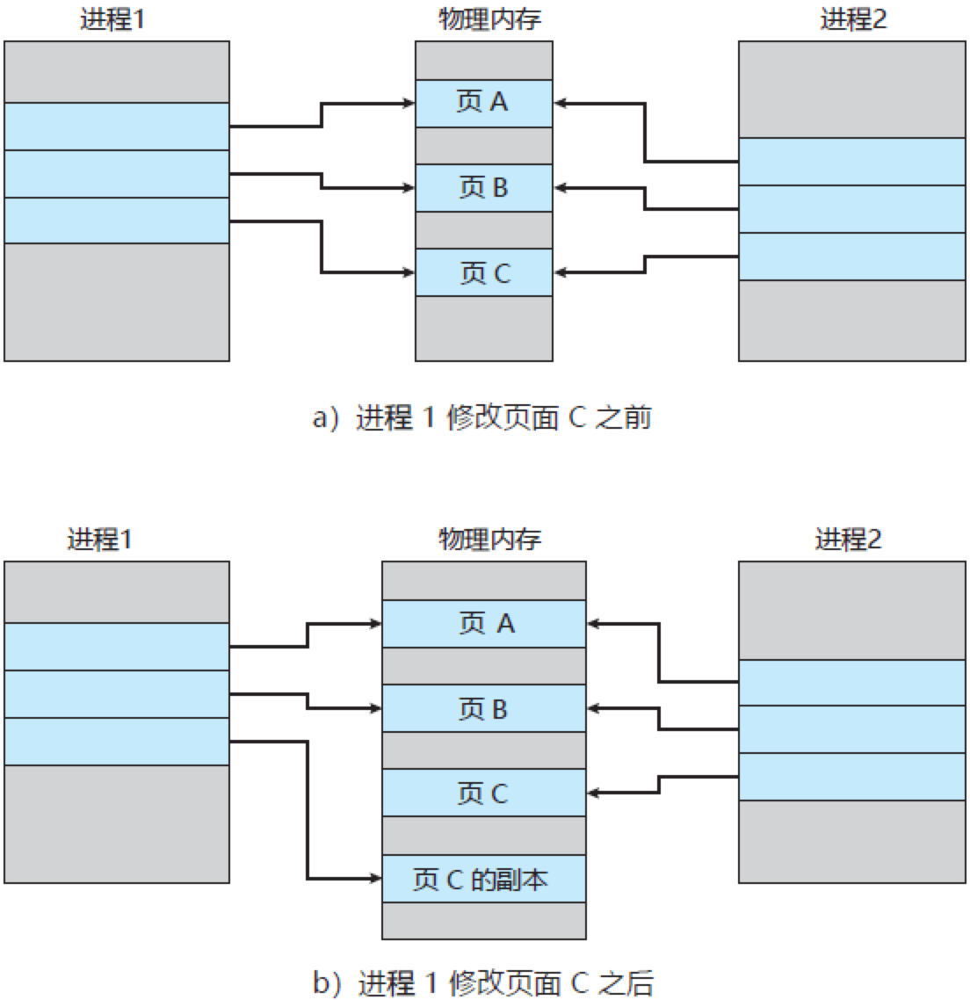

前言
Redis的rdb 相信接触redis的同学都不陌生，rdb是redis持久化的快照文件。但有一个问题，时点的问题，比如redis 8点开始触发异步的持久化，假设需要十分钟的时间，那么这10分钟，主进程如果修改了内存数据，那么子进程进行持久化是写的修改后的数据吗？如果是，那此时持久化的数据就产生了脏数据,出现了数据一致性问题，如果不是，那此时内存数据被修改,又是如何做到呢？
那么通过回答这个问题来熟悉一下rdb的实现原理吧。
父子进程数据隔离
- $$ 与 $BASHPID均为取当前进程的PID
1 | [root@bigdata ~]# echo $$ |
- | 管道会触发子进程
1 | [root@bigdata ~]# echo $BASHPID |
- $$ 优先级比$BASHPID要高
1 | [root@bigdata ~]# echo $$ | more |
4.父进程导出变量,子进程可以查看 不能修改
1 | [root@bigdata ~]# echo $$ |
- 父进程修改变量，不会影响子进程
1 | ---子进程执行脚本 |
小结
通过shell命令的演示，可以看到linux中，父子进程的数据是导出的关系，而非共享，也就是说其中一方的修改，并不会影响另一方。
有linux数据隔离的支持，就为redis的异步保存快照提供了可能，同时有两个进程 主进程与异步的rdb子进程，主进程该写写，而做rdb的子进程看到的只是8点时刻的数据，并且只是进行一个读操作 。
Fork系统调用
有了父子进程,通过数据隔离,就可以做异步持久化操作了,但还要考虑性能问题
进程都是需要进程空间的,拷贝子进程的时间？空间，如果当前redis内存占用10g，那么拷贝子进程至少拷贝10g数据，这个时间，再者，子进程也要占用10g内存，那么空间至少要啊20g才可以，这种情况下代价是不是有点大？
fork()函数
1 |
|

linux的fork 系统调用 解决了上述的问题，fork出来的子进程，并非直接进行数据的拷贝。
linux编程中，通过fork函数会创建子进程，创建后根据写时复制策略，父子进程是共享父进程的堆与栈，当父子进程中的一方对内存进行了写操作后，父子进程的内存会分离，各自拥有自己独立的内存。
COW 写时复制机制
在 Linux 系统中，调用 fork 系统调用创建子进程时，并不会把父进程所有占用的内存页复制一份，而是与父进程共用相同的内存页，而当子进程或者父进程对内存页进行修改时才会进行复制 —— 这就是著名的 写时复制 机制。

配置及优缺点
默认配置如下:
save 900 1
save 300 10
save 60 10000从下往上，时间依次变长，只要满足一个条件就触发rdb保存。目的就是尽可能的减少数据丢失
缺点:丢失数据相对多一些 时点与时点之间窗口数据容易丢失 ,8点得到一个rdb，9点要落一个rdb，挂机了
优点：类似java中的序列化 恢复的速度相对快
总结
涉及到持久化的方式 一般就两种，一种是快照 一种则是日志。今天我们介绍的就是快照的实现原理，通过linux 父子进程的数据隔离、fork系统调用以及cow机制 实现了rdb快照。

...
...
This is copyright.